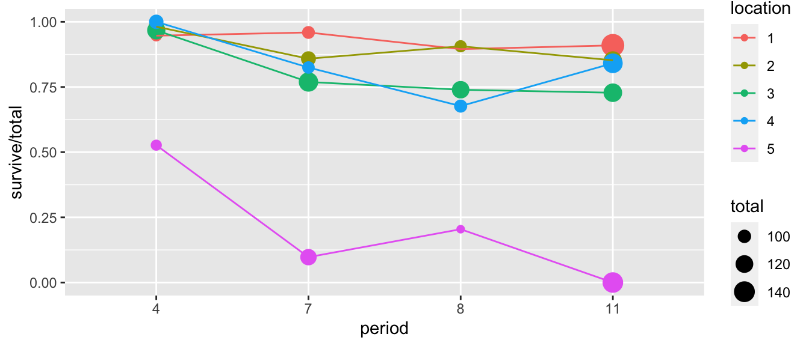
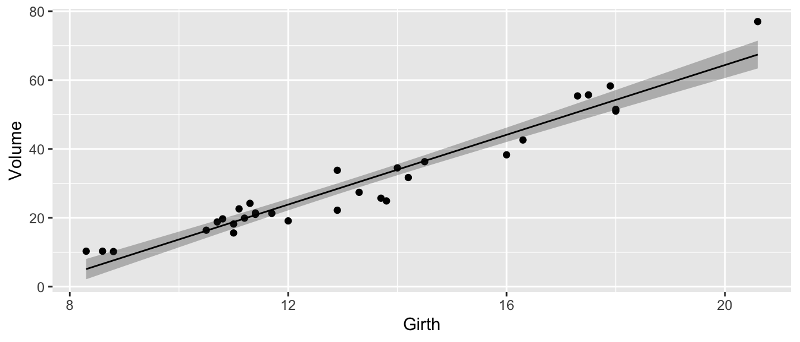
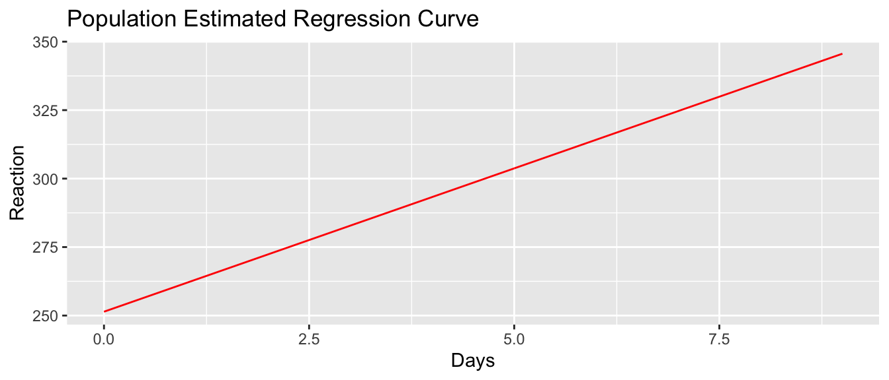
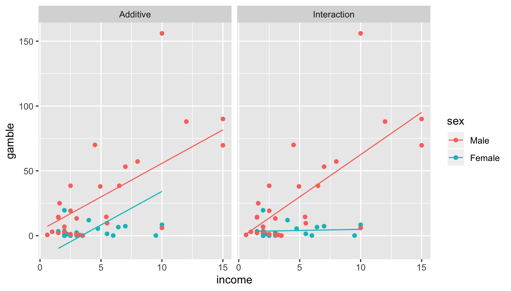

Chapter 4 Contrasts
library(tidyverse) # ggplot2, dplyr, tidyr
library(tidymodels) # for broom functions
library(emmeans) # for emmeans()
# library(multcomp) # for glht() - multcomp fights with dplyr, :(4.1 Introduction
We have written our model as \(\boldsymbol{y} = \boldsymbol{X\beta}+\boldsymbol{\epsilon}\) and often we are interested in some linear function of the \(\boldsymbol{\hat{\beta}}\). Some examples include the model predictions \(\hat{y}_i = \boldsymbol{X}_{i\cdot} \boldsymbol{\beta}\) where \(\boldsymbol{X}_{i\cdot}\) is the \(i^{th}\) row of the \(\boldsymbol{X}\) matrix. Other examples include differences in group means in a one-way ANOVA or differences in predicted values \(\hat{y}_i - \hat{y}_j\).
All of these can can be written as \(\boldsymbol{c}'\boldsymbol{\beta}\) for some vector \(\boldsymbol{c}\).
We often are interested in estimating a function of the parameters \(\boldsymbol{\beta}\). For example in the offset representation of the ANOVA model with 3 groups we have \[y_{ij}=\mu+\tau_{i}+\epsilon_{ij}\] where \[ \boldsymbol{\beta}=\left[\mu\;\tau_{2}\;\tau_{3}\right]^{T} \] and \(\mu\) is the mean of the control group, group one is the control group and thus \(\tau_{1}=0\), and \(\tau_{2}\) and \(\tau_{3}\) are the offsets of group two and three from the control group. In this representation, the mean of group two is \(\mu+\tau_{2}\) and is estimated with \(\hat{\mu} + \hat{\tau}_2\).
A contrast is a linear combinations of elements of \(\boldsymbol{\hat{\beta}}\), which is a fancy way of saying that it is a function of the elements of \(\boldsymbol{\hat{\beta}}\) where the elements can be added, subtracted, or multiplied by constants. In particular, the contrast can be represented by the vector \(\boldsymbol{c}\) such that the function we are interested in is \(\boldsymbol{c}^{T}\boldsymbol{\hat{\beta}}\).
In the ANOVA case with \(k=3\) where we have the offset representation, I might be interested in the mean of group 2, which could be written as \[ \hat{\mu}_2 = \hat{\mu}+\hat{\tau}_{2}=\underset{\boldsymbol{c}^{T}}{\underbrace{\left[\begin{array}{ccc} 1 & 1 & 0\end{array}\right]}}\cdot\underset{\hat{\boldsymbol{\beta}}}{\underbrace{\left[\begin{array}{c} \hat{\mu}\\ \hat{\tau_{2}}\\ \hat{\tau_{3}} \end{array}\right]}} \]
Similarly in the simple regression case, I will be interested in the height of the regression line at \(x_0\). This height can be written as
\[
\hat{y}_0 =\hat{\beta}_{0}+\hat{\beta}_{1}x_{0}=\underset{\boldsymbol{c}^{T}}{\underbrace{\left[\begin{array}{cc}
1 & x_{0}\end{array}\right]}}\cdot\underset{\hat{\boldsymbol{\beta}}}{\underbrace{\left[\begin{array}{c}
\hat{\beta}_{0}\\
\hat{\beta}_{1}
\end{array}\right]}}
\]
In this manner, we could think of calculating all of the predicted values \(\hat{y}_i\) as just the result of the contrast \(\boldsymbol{X} \hat{\boldsymbol{\beta}}\) where our design matrix \(\boldsymbol{X}\) takes the role of the contrasts.
4.2 Estimate and variance
One of the properties of maximum likelihood estimator (MLEs), is that they are invariant under transformations. Meaning that since \(\hat{\boldsymbol{\beta}}\) is the MLE of \(\boldsymbol{\beta}\), then \(\boldsymbol{c}^{T}\hat{\boldsymbol{\beta}}\) is the MLE of \(\boldsymbol{c}^{T}\boldsymbol{\beta}\). The only thing we need to perform hypotheses tests and create confidence intervals is an estimate of the variance of \(\boldsymbol{c}^{T}\hat{\boldsymbol{\beta}}\).
Because we know the variance of \(\hat{\boldsymbol{\beta}}\) is \[ Var\left(\hat{\boldsymbol{\beta}}\right)=\sigma^{2}\left(\boldsymbol{X}^{T}\boldsymbol{X}\right)^{-1} \] and because \(\boldsymbol{c}\) is a constant, then \[ Var\left(\boldsymbol{c}^{T}\hat{\boldsymbol{\beta}}\right)=\sigma^{2}\boldsymbol{c}^{T}\left(\boldsymbol{X}^{T}\boldsymbol{X}\right)^{-1}\boldsymbol{c} \] and the standard error is found by plugging in our estimate of \(\sigma^{2}\) and taking the square root. \[ StdErr\left(\boldsymbol{c}^{T}\hat{\boldsymbol{\beta}}\right) = \sqrt{\hat{\sigma}^{2}\boldsymbol{c}^{T}\left(\boldsymbol{X}^{T}\boldsymbol{X}\right)^{-1}\boldsymbol{c}} = \hat{\sigma}\sqrt{\boldsymbol{c}^{T}\left(\boldsymbol{X}^{T}\boldsymbol{X}\right)^{-1}\boldsymbol{c}} \]
As usual, we can now calculate confidence intervals for \(\boldsymbol{c}^{T}\hat{\boldsymbol{\beta}}\) using the usual formula \[Est \pm t_{n-p}^{1-\alpha/2}\;StdErr\left(\,Est\,\right)\] \[ \boldsymbol{c}^{T}\hat{\boldsymbol{\beta}} \pm t_{n-p}^{1-\alpha/2}\;\hat{\sigma}\sqrt{\boldsymbol{c}^{T}\left(\boldsymbol{X}^{T}\boldsymbol{X}\right)^{-1}\boldsymbol{c}} \]
Recall the hostility example which was an ANOVA with three groups with the data
| Method | Test Scores |
|---|---|
| 1 | 96 79 91 85 83 91 82 87 |
| 2 | 77 76 74 73 78 71 80 |
| 3 | 66 73 69 66 77 73 71 70 74 |
We have analyzed this data using both the cell means model and the offset and we will demonstrate how to calculate the group means from the offset representation. Thus we are interested in estimating \(\mu+\tau_{2}\) and \(\mu+\tau_{3}\). I am also interested in estimating the difference between treatment 2 and 3 and will therefore be interested in estimating \(\tau_{2} - \tau_{3}\).
data <- data.frame(
y = c(96,79,91,85,83,91,82,87,
77,76,74,73,78,71,80,
66,73,69,66,77,73,71,70,74),
group = factor(c( rep('Group1',8), rep('Group2',7),rep('Group3',9) ))
)
ggplot(data, aes(x=group, y=y)) + geom_boxplot()
We can fit the offset model and obtain the design matrix and estimate of \(\hat{\sigma}\) via the following code.
m <- lm(y ~ group, data=data) # Fit the ANOVA model (offset representation)
tidy(m) # Show me beta.hat## # A tibble: 3 x 5
## term estimate std.error statistic p.value
## <chr> <dbl> <dbl> <dbl> <dbl>
## 1 (Intercept) 86.8 1.52 57.1 1.57e-24
## 2 groupGroup2 -11.2 2.22 -5.03 5.58e- 5
## 3 groupGroup3 -15.8 2.09 -7.55 2.06e- 7X <- model.matrix(m) # obtains the design matrix
sigma.hat <- glance(m) %>% pull(sigma) # grab sigma.hat
beta.hat <- tidy(m) %>% pull(estimate)
XtX.inv <- solve( t(X) %*% X )Now we calculate
contr <- c(1,1,0) # define my contrast
ctb <- t(contr) %*% beta.hat
std.err <- sigma.hat * sqrt( t(contr) %*% XtX.inv %*% contr )
data.frame(Estimate=ctb, StdErr=std.err)## Estimate StdErr
## 1 75.57143 1.622994and notice this is the exact same estimate and standard error we got for group two when we fit the cell means model.
CellMeansModel <- lm(y ~ group - 1, data=data)
CellMeansModel %>% tidy()## # A tibble: 3 x 5
## term estimate std.error statistic p.value
## <chr> <dbl> <dbl> <dbl> <dbl>
## 1 groupGroup1 86.7 1.52 57.1 1.57e-24
## 2 groupGroup2 75.6 1.62 46.6 1.12e-22
## 3 groupGroup3 71 1.43 49.6 2.99e-234.3 Estimating contrasts using glht()
Instead of us doing all the matrix calculations ourselves, all we really need is to is specify the row vector \(\boldsymbol{c}^{T}\). The function that will do the rest of the calculations is the generalized linear hypothesis test function glht() that can be found in the multiple comparisons package multcomp. The p-values will be adjusted to correct for testing multiple hypothesis, so there may be slight differences compared to the p-value seen in just the regular summary table.
4.3.1 1-way ANOVA
We will again use the Hostility data set and demonstrate how to calculate the point estimates, standard errors and confidence intervals for the group means given a model fit using the offset representation.
m <- lm(y ~ group, data=data)
m %>% tidy()## # A tibble: 3 x 5
## term estimate std.error statistic p.value
## <chr> <dbl> <dbl> <dbl> <dbl>
## 1 (Intercept) 86.8 1.52 57.1 1.57e-24
## 2 groupGroup2 -11.2 2.22 -5.03 5.58e- 5
## 3 groupGroup3 -15.8 2.09 -7.55 2.06e- 7We will now define a row vector (and it needs to be a matrix or else glht() will throw an error. First we note that the simple contrast \(\boldsymbol{c}^{T}=\left[1\;0\;0\right]\) just grabs the first coefficient and gives us the same estimate and standard error as the summary did.
contr <- rbind("Intercept"=c(1,0,0)) # 1x3 matrix with row named "Intercept"
test <- multcomp::glht(m, linfct=contr) # the linear function to be tested is contr
summary(test)##
## Simultaneous Tests for General Linear Hypotheses
##
## Fit: lm(formula = y ~ group, data = data)
##
## Linear Hypotheses:
## Estimate Std. Error t value Pr(>|t|)
## Intercept == 0 86.750 1.518 57.14 <2e-16 ***
## ---
## Signif. codes: 0 '***' 0.001 '**' 0.01 '*' 0.05 '.' 0.1 ' ' 1
## (Adjusted p values reported -- single-step method)Next we calculate the estimate of all the group means \(\mu\), \(\mu+\tau_{2}\) and \(\mu+\tau_{3}\) and the difference between group 2 and 3. Notice I can specify more than one contrast at a time.
contr <- rbind("Mean of Group 1"=c(1,0,0),
"Mean of Group 2"=c(1,1,0),
"Mean of Group 3"=c(1,0,1),
"Diff G2-G3" =c(0,1,-1))
test <- multcomp::glht(m, linfct=contr)
summary(test)##
## Simultaneous Tests for General Linear Hypotheses
##
## Fit: lm(formula = y ~ group, data = data)
##
## Linear Hypotheses:
## Estimate Std. Error t value Pr(>|t|)
## Mean of Group 1 == 0 86.750 1.518 57.141 <0.001 ***
## Mean of Group 2 == 0 75.571 1.623 46.563 <0.001 ***
## Mean of Group 3 == 0 71.000 1.431 49.604 <0.001 ***
## Diff G2-G3 == 0 4.571 2.164 2.112 0.144
## ---
## Signif. codes: 0 '***' 0.001 '**' 0.01 '*' 0.05 '.' 0.1 ' ' 1
## (Adjusted p values reported -- single-step method)Finally we calculate confidence intervals in the usual manner using the confint() function.
confint(test, level=0.95)##
## Simultaneous Confidence Intervals
##
## Fit: lm(formula = y ~ group, data = data)
##
## Quantile = 2.6461
## 95% family-wise confidence level
##
##
## Linear Hypotheses:
## Estimate lwr upr
## Mean of Group 1 == 0 86.7500 82.7328 90.7672
## Mean of Group 2 == 0 75.5714 71.2769 79.8660
## Mean of Group 3 == 0 71.0000 67.2126 74.7874
## Diff G2-G3 == 0 4.5714 -1.1546 10.29754.4 Using emmeans Package
Specifying the contrasts by hand is extremely difficult to do correctly and instead we would prefer to specify the contrasts using language like “create all possible pairwise contrasts” where each pair is just a subtraction. The R-package emmeans tries to simply the creation of common contrasts.
To show how to use the emmeans package, we’ll consider a bunch of common models and show how to address common statistical questions for each.
4.4.1 Simple Regression
There is a dataset built into R named trees which describes a set of \(n=31\) cherry trees and the goal is to predict the volume of timber produced by each tree just using the tree girth a 4.5 feet above the ground.
data(trees)
model <- lm( Volume ~ Girth, data=trees )
trees <- trees %>%
dplyr::select( -matches('fit'), -matches('lwr'), -matches('upr') ) %>%
cbind( predict(model, interval='conf'))
ggplot(trees, aes(x=Girth, y=Volume)) +
geom_point() +
geom_ribbon( aes(ymin=lwr, ymax=upr), alpha=.3 ) +
geom_line( aes(y=fit) )
Using the summary() function, we can test hypotheses about if
the y-intercept or slope could be equal to zero, but we might be interested in confidence intervals for the regression line at girth values of 10 and 12.
# We could find the regression line heights and CI using
# either predict() or emmeans()
predict(model, newdata=data.frame(Girth=c(10,12)), interval='conf' )## fit lwr upr
## 1 13.71511 11.44781 15.98240
## 2 23.84682 22.16204 25.53159emmeans(model, specs = ~Girth, at=list(Girth=c(10,12)) ) ## Girth emmean SE df lower.CL upper.CL
## 10 13.7 1.109 29 11.4 16.0
## 12 23.8 0.824 29 22.2 25.5
##
## Confidence level used: 0.95The emmeans() function requires us to specify the grid of reference points we are interested as well as which variable or variables we wish to separate out. In the simple regression case, the specs argument is just the single covariate.
We might next ask if the difference in volume between a tree with 10 inch girth is statistically different than a tree with 12 inch girth? In other words, we want to test \[ H_0:\; (\beta_0 + \beta_1\cdot10 ) - (\beta_0 + \beta_1 \cdot 12) = 0\] \[ H_a:\; (\beta_0 + \beta_1\cdot10 ) - (\beta_0 + \beta_1 \cdot 12) \ne 0\]
In this case, we want to look at all possible pairwise differences between the predicted values at \(10\) and \(12\). (The rev part just reverses the order in which we do the subtraction.)
emmeans(model, specs = revpairwise~Girth,
at=list(Girth=c(10,12)) ) ## $emmeans
## Girth emmean SE df lower.CL upper.CL
## 10 13.7 1.109 29 11.4 16.0
## 12 23.8 0.824 29 22.2 25.5
##
## Confidence level used: 0.95
##
## $contrasts
## contrast estimate SE df t.ratio p.value
## 12 - 10 10.1 0.495 29 20.478 <.0001Notice that if I was interested in 3 points, we would get all of the differences.
emmeans(model, specs = pairwise~Girth,
at=list(Girth=c(10,11,12)) ) ## $emmeans
## Girth emmean SE df lower.CL upper.CL
## 10 13.7 1.109 29 11.4 16.0
## 11 18.8 0.945 29 16.8 20.7
## 12 23.8 0.824 29 22.2 25.5
##
## Confidence level used: 0.95
##
## $contrasts
## contrast estimate SE df t.ratio p.value
## 10 - 11 -5.07 0.247 29 -20.478 <.0001
## 10 - 12 -10.13 0.495 29 -20.478 <.0001
## 11 - 12 -5.07 0.247 29 -20.478 <.0001
##
## P value adjustment: tukey method for comparing a family of 3 estimatesIn this very simple case, the slope parameter is easily available as a parameter value, but we could use the emtrends() function to obtain the slope.
emtrends( model, ~Girth, 'Girth' )## Girth Girth.trend SE df lower.CL upper.CL
## 13.2 5.07 0.247 29 4.56 5.57
##
## Confidence level used: 0.95This output is a bit mysterious because because of the 13.248 component. What has happened is that emtrends is telling us the slope of the line at a particular point on the x-axis (the mean of all the girth values). While this doesn’t matter in this example, because the slope is the same for all values of girth, if we had fit a quadratic model, it would not.
model <- lm( Volume ~ poly(Girth, 2), data=trees ) # Girth + Girth^2
trees <- trees %>%
dplyr::select(Volume, Girth) %>%
cbind(predict(model, interval='conf'))
ggplot(trees, aes(x=Girth, y=Volume)) +
geom_point() +
geom_ribbon( aes(ymin=lwr, ymax=upr), alpha=.3 ) +
geom_line( aes(y=fit) )
emtrends( model, ~ poly(Girth,2), 'Girth',
at=list(Girth=c(10,11,12)) )## Girth Girth.trend SE df lower.CL upper.CL
## 10 3.00 0.510 28 1.96 4.05
## 11 3.51 0.405 28 2.68 4.34
## 12 4.02 0.308 28 3.39 4.65
##
## Confidence level used: 0.954.4.2 1-way ANOVA
To consider the pairwise contrasts between different levels we will consider the college student hostility data again. A clinical psychologist wished to compare three methods for reducing hostility levels in university students, and used a certain test (HLT) to measure the degree of hostility. A high score on the test indicated great hostility. The psychologist used \(24\) students who obtained high and nearly equal scores in the experiment. Eight subjects were selected at random from among the \(24\) problem cases and were treated with method 1, seven of the remaining \(16\) students were selected at random and treated with method 2 while the remaining nine students were treated with method 3. All treatments were continued for a one-semester period. Each student was given the HLT test at the end of the semester, with the results show in the following table.
Hostility <- data.frame(
HLT = c(96,79,91,85,83,91,82,87,
77,76,74,73,78,71,80,
66,73,69,66,77,73,71,70,74),
Method = c( rep('M1',8), rep('M2',7), rep('M3',9) ) )ggplot(Hostility, aes(x=Method, y=HLT)) +
geom_boxplot()
To use the emmeans(), we again will use the pairwise command where we specify that we want all the pairwise contrasts between Method levels.
model <- lm( HLT ~ Method, data=Hostility )
emmeans(model, specs = pairwise~Method,
infer=c(TRUE,TRUE) ) # Print out Confidence Intervals and Pvalues## $emmeans
## Method emmean SE df lower.CL upper.CL t.ratio p.value
## M1 86.8 1.52 21 83.6 89.9 57.141 <.0001
## M2 75.6 1.62 21 72.2 78.9 46.563 <.0001
## M3 71.0 1.43 21 68.0 74.0 49.604 <.0001
##
## Confidence level used: 0.95
##
## $contrasts
## contrast estimate SE df lower.CL upper.CL t.ratio p.value
## M1 - M2 11.18 2.22 21 5.577 16.8 5.030 0.0002
## M1 - M3 15.75 2.09 21 10.491 21.0 7.548 <.0001
## M2 - M3 4.57 2.16 21 -0.883 10.0 2.112 0.1114
##
## Confidence level used: 0.95
## Conf-level adjustment: tukey method for comparing a family of 3 estimates
## P value adjustment: tukey method for comparing a family of 3 estimatesBy default, emmeans() and emtrends() don’t provide p-values for testing if the effect could possibly be equal to zero. To get those, you’ll need to set the inference option to return both confidence intervals and p-values using the infer=c(TRUE,TRUE), where the two logical values control the inclusion of the confidence interval and p-value, respectively.
4.5 Exercises
The American Community Survey is on ongoing survey being conducted monthly by the US Census Bureau and the package
Lock5Datahas a dataset calledEmployedACSthat has 431 randomly selected anonymous US residents from this survey.data('EmployedACS', package='Lock5Data') ?Lock5Data::EmployedACS- Create a boxplot of the respondents’
RaceandIncome. - Fit a 1-way ANOVA on these data.
- Use
multcomp::glht()to calculate all the pairwise differences between the race categories. - Use
emmeans()to calculate all the pairwise differnces between the race categories.
- Create a boxplot of the respondents’
We will examine a data set from Ashton et al. (2007) that relates the length of a tortoise’s carapace to the number of eggs laid in a clutch. The data are
Eggs <- data.frame( carapace = c(284,290,290,290,298,299,302,306,306, 309,310,311,317,317,320,323,334,334), clutch.size = c(3,2,7,7,11,12,10,8,8, 9,10,13,7,9,6,13,2,8))Plot the data with carapace as the explanatory variable and clutch size as the response.
We want to fit the model \[y_i = \beta_0 + \beta_1 x_i + \beta_2 x_i^2 + \epsilon_i \textrm{ where } \epsilon_i \stackrel{iid}{\sim} N(0, \sigma^2)\] To fit this model, we need the design matrix with a column of ones, a column of \(x_i\) values and a column of \(x_i^2\) values. To fit this model, we could create a new column of \(x_i^2\) values, or do it in the formula.
Eggs <- Eggs %>% mutate( carapace.2 = carapace^2 ) model <- lm(clutch.size ~ 1 + carapace + carapace.2, data=Eggs) # one version model <- lm(clutch.size ~ 1 + carapace + I(carapace^2), data=Eggs) # Do squaring inside formula model <- lm(clutch.size ~ 1 + poly(carapace, degree=2, raw=TRUE), data=Eggs) # using polynomial functionUse the
predict()function to calculate the regression predictions and add those predictions to theEggsdataset.Graph the data with the regression curve.
Use the
emmeans()function to estimate the clutch sizes for tortoise’s with carapace sizes of 300 and 320. Provide a confidence interval for the estimates and a p-value for the hypothesis test that the value could be zero.Use the
emmeans()function to estimate the difference between clutch size prediction for tortoise’s with carapace sizes of 300 and 320. Provide a confidence interval for the estimates and a p-value for the hypothesis test that the difference could be zero.Use the
emtrends()function to find the estimated slope at carapace sizes of 300 and 320. Provide a confidence interval for the estimates and a p-value for the hypothesis test that the value could be zero.Use the
emtrends()function to estimate the differences between slopes at carapace sizes 300 and 320. Provide a confidence interval for the estimates and a p-value for the hypothesis test that the difference could be zero.